Dos adultas acompañan este nivel: una educadora de párvulos y una técnico en educación parvularia, en el momento en que el lenguaje y la autonomía se despliegan.
VictoriaEducadora de párvulos
ElisaTécnico en Educación Parvularia
Documentación pedagógica
Así aprenden en Aula Luna
La edad en que todo se nombra y todo se imita. Acá el juego simbólico y el vínculo con los otros son el motor: hablar, imitar, negociar y descubrir que el otro también piensa.
Cada proceso queda registrado con fotos y palabras: lo que el grupo preguntó, lo que probó y lo que descubrió. En la filosofía Reggio Emilia, en la que Bianca Stella se inspira, a esto se le llama documentar: hacer visible cómo aprende la infancia.
Algunos proyectos de Aula Luna 2026
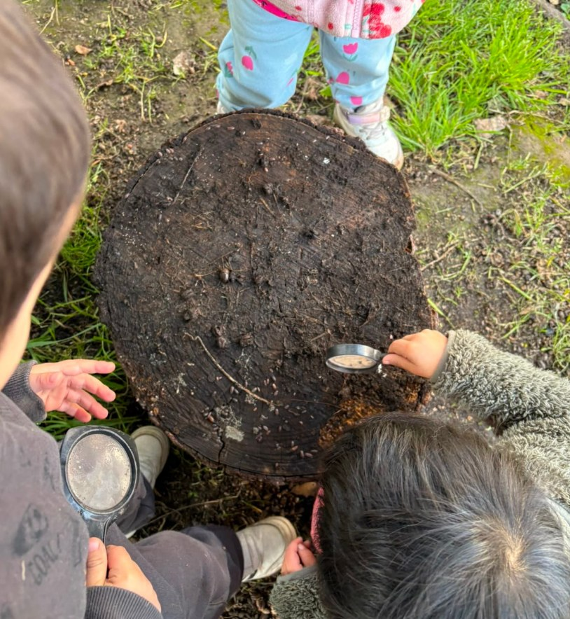
cap. I
Tierra viva
el mundo bajo nuestros pies
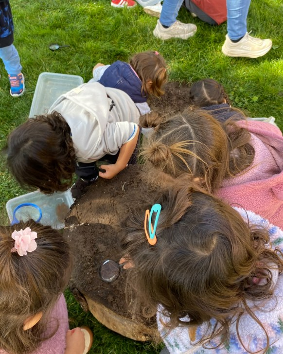
Para las niñas y niños del Aula Luna, el aprendizaje es ante todo un acto de contacto directo. A esta edad, el impulso más poderoso nace del deseo genuino por descifrar el mundo inmediato. Cada textura, objeto y diminuta criatura guarda un misterio esperando ser revelado a través de los sentidos y la mirada atenta.
Exploración
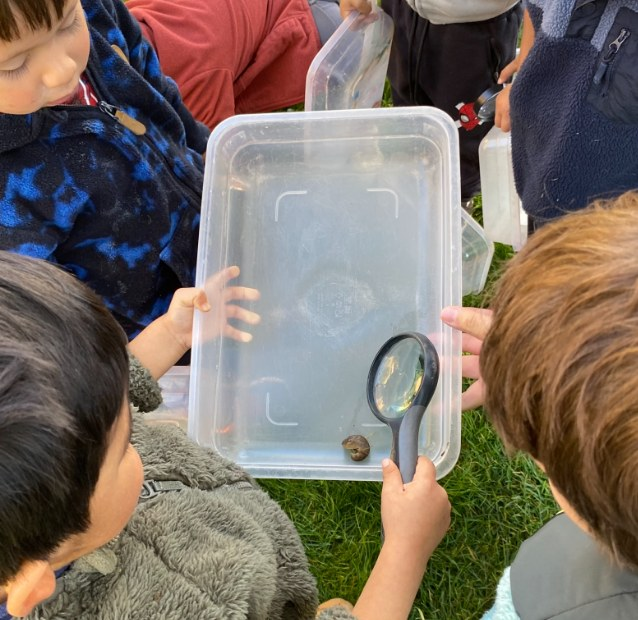
“La babosa es pegajosa”Lucas D., 3 años y 5 meses
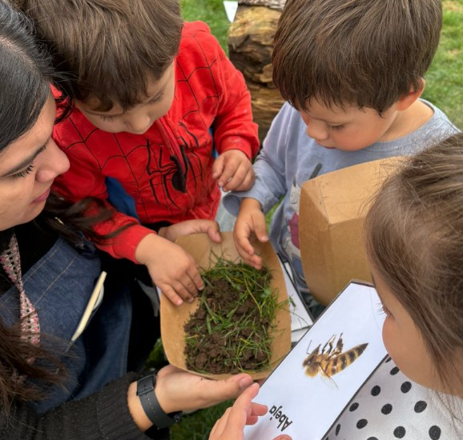
“Abeja pica pica”Alexander, 4 años y 1 mes
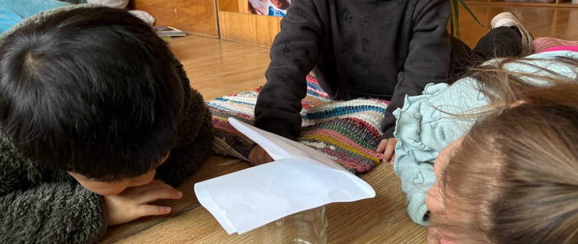
“¡Tiene muchas patas!”Lucas D., 3 años y 5 meses
En el aula pudimos detener el tiempo: transformamos el hallazgo rápido del patio en un taller de estudio atento, dándoles a los niños y niñas la oportunidad de investigar con rigor y asombro.
“Exploramos y descubrimos lo que vive a nuestro alrededor.”
Exploración
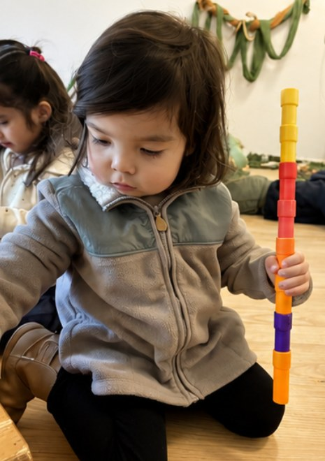
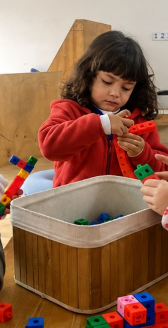
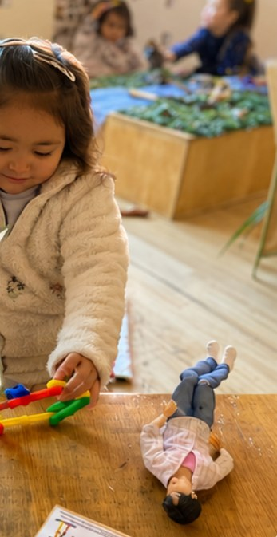
cap. II
Construcción
torres, puentes y casas
En cada torre, puente o casa encontramos hipótesis, decisiones y relatos. Los niños observan, prueban, modifican y vuelven a intentar, descubriendo que cada pieza puede adquirir un nuevo significado. Así, la construcción se transforma en una oportunidad para crear, comunicar y compartir ideas con otros.
“Hice una chimenea azul para la casa”Julieta, 3 años y 2 meses
Posibilidades de mi cuerpo y mente
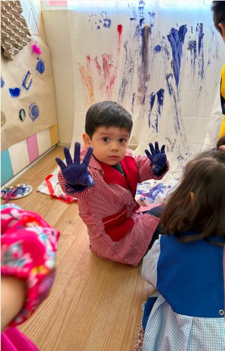
“Manosh”Juan, 2 años
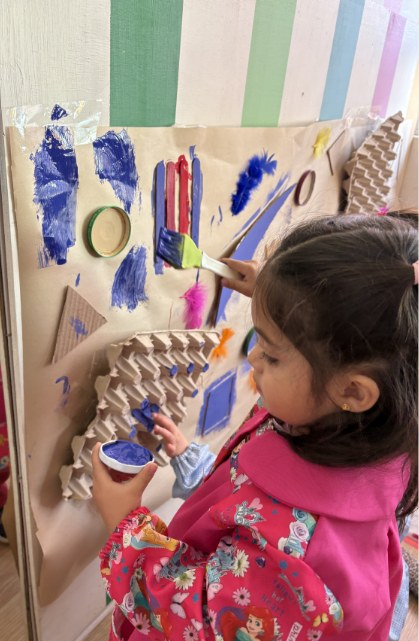
“Guta ashul”Trinidad, 2 años y 10 meses
cap. III
Colores y posibilidades
nuestra zona de arte
Cada material es una invitación a explorar. Los niños y niñas mezclan, prueban, observan, crean y vuelven a comenzar. En este espacio no buscamos un resultado específico; valoramos el proceso, la experimentación y las múltiples formas de expresión que surgen de manera espontánea.
Posibilidades de mi cuerpo y mente
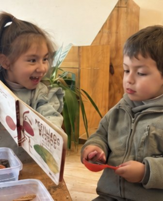
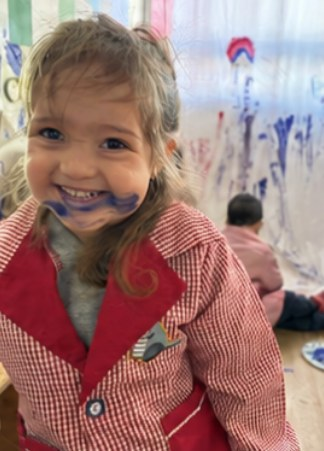
cap. IV
Ambientes
autonomía, curiosidad y encuentros
Autonomía
Los espacios permanecen disponibles para que puedan elegir dónde comenzar, cuánto tiempo permanecer y cómo explorar según sus intereses.
Curiosidad
Cada material busca despertar preguntas antes que entregar respuestas: las propuestas invitan a observar, experimentar, crear y descubrir a través del juego y la exploración.
Encuentros
Los ambientes favorecen conversaciones, colaboraciones y juegos compartidos, donde cada niño aporta desde su propia manera de ser y aprender.
Vínculos y juegos
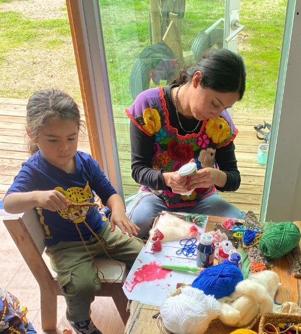
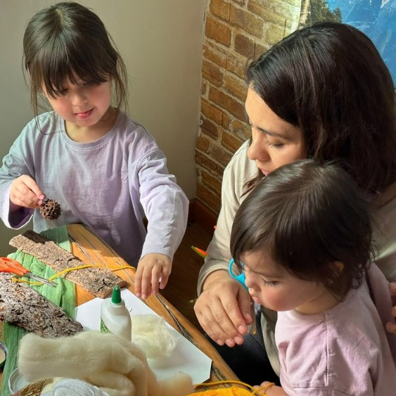
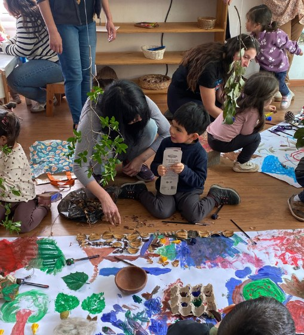
cap. V
Familias
historias que comienzan en familia
La familia es uno de los primeros espacios donde los niños y niñas comienzan a construir su identidad y sentido de pertenencia.
A través de ella conocen historias, costumbres y tradiciones que los conectan con su entorno y su cultura.
Vínculos y juegos
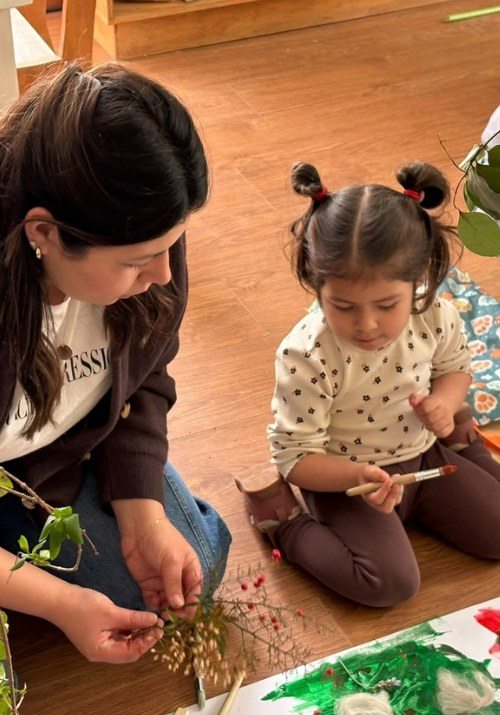
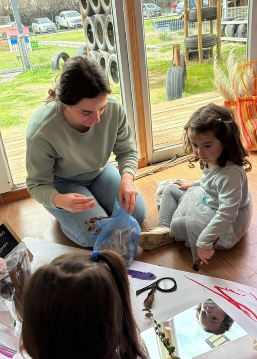
Cuando los saberes se encuentran
Durante la experiencia, las familias no solo acompañaron: también aportaron sus propios saberes, recuerdos e ideas. Preguntas como “¿Cómo imaginamos el sur?” o “¿Qué podemos encontrar allí?” dieron lugar a conversaciones sobre ovejas, volcanes, el viento y otros elementos del territorio.
Los conocimientos de los adultos comenzaron a encontrarse con las ideas de los niños y niñas, ampliándolas, enriqueciéndolas y dando origen a nuevas posibilidades de creación.
Vínculos y juegos
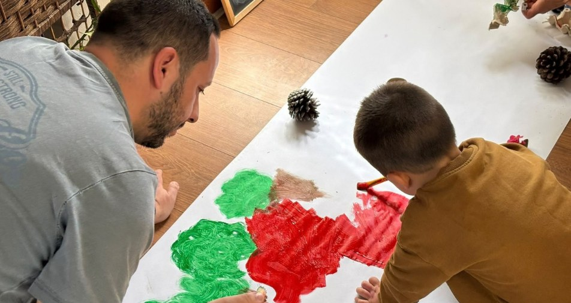
Crear también es encontrarse
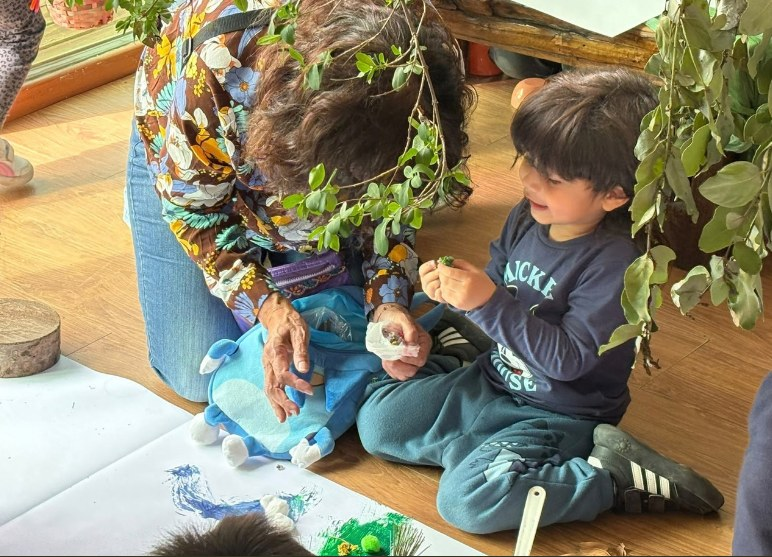
Adultos y niños crearon lado a lado, compartiendo decisiones, descubrimientos e ideas que fueron dando forma a una experiencia construida entre todos.
El encuentro se transformó en un espacio de exploración y creación compartida. Niños, niñas y familias recorrieron diferentes propuestas artísticas, encontrándose con materiales, colores, texturas y nuevas posibilidades de expresión.
Vínculos y juegoscap. VI
Cocinando juntos
un taller hecho en dúo: Luna y Sole
“Cuando el interés nos une, los aprendizajes se multiplican.”
¿De dónde surge?
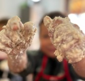
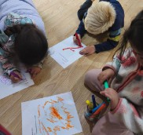
Luna explora
Luego de diversos encuentros sensoriales con harina (amasando, vertiendo, mezclando y observando sus transformaciones), Luna comenzó a evidenciar un interés sostenido por avanzar hacia nuevas posibilidades: cocinar y dar forma intencionada a sus mezclas.
Sole observa e interpreta
Desde estas exploraciones, el grupo Sole expresó su curiosidad en preguntas y deseos: ¿cuándo cocinar?, ¿qué crear con masa? Así surge la idea de cocinar, dando cuenta de un aprendizaje que se construye desde el interés, la observación y el encuentro con otros.
Alimentos
Nació el deseo de compartir
Desde esta curiosidad compartida emergió el deseo de encontrarse, colaborar y aprender juntos.
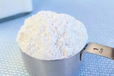
El Atelier del Gusto se transformó en un territorio común, donde la ayuda mutua, la escucha y el acompañamiento entre niveles cobraron protagonismo. Los niños y niñas se enseñaron y construyeron experiencias significativas desde el hacer colectivo.
Primera receta: ¡pizza!
La pizza se convirtió en la primera experiencia culinaria compartida, donde cada niño y niña participó activamente desde sus saberes e intereses. La cocina se transformó en un espacio donde pensamiento, acción y comunicación se entrelazan de manera natural.
Alimentos
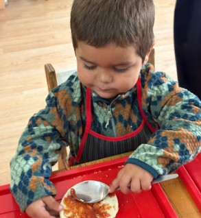
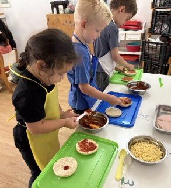
Luna organiza la secuencia y relaciona cantidades
Luna siguió la receta organizando las acciones paso a paso. A medida que avanzaba, estableció relaciones entre ingredientes y cantidades, agregando una cucharada a la vez y comprendiendo el propósito de cada acción. Este recorrido le permitió anticipar la secuencia y construir correspondencias uno a uno, integrando nociones matemáticas desde la experiencia concreta.
Sole representa, organiza y experimenta con cantidades
Previo al ingreso al Atelier del Gusto, Sole representa su receta de pizza mediante el dibujo y la escritura, reconociendo sus ingredientes. Luego, en diálogo con la receta de Luna, da forma a su preparación, explorando medidas y cantidades desde sus intereses, en un hacer que se construye entre la experiencia, la reflexión y el encuentro con otros.
Alimentos
Segunda receta: ¡waffles!
En la segunda semana, los niños y niñas preparan waffles explorando desde sus intereses. Observan la masa, las cantidades y su transformación, para luego personalizar sus preparaciones eligiendo y combinando ingredientes según sus gustos, favoreciendo la autonomía y la toma de decisiones. La receta accesible acerca a Sole y Luna a la lectoescritura, fortaleciendo su participación en el proceso.
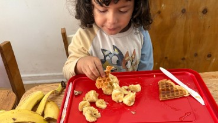
Luna explora, elige y construye significados
Luna se acerca a los ingredientes desde la exploración, manipulando la masa con curiosidad. Al incorporar el plátano, participa en su conteo, estableciendo correspondencias. Luego corta y elige combinaciones según sus preferencias, dando forma a una preparación significativa y construyendo sentido a través del hacer.
Alimentos
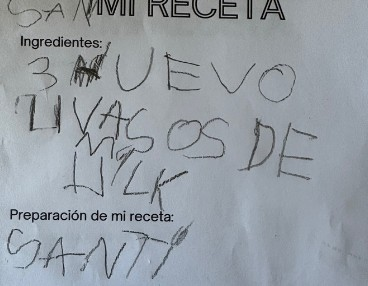
Sole: lectura, creación y huella de su propia receta
Sole se acerca a la receta explorando su lectura y reconociendo sus ingredientes. Desde allí, toma decisiones para crear sus waffles: corta, elige y combina según sus gustos. En este proceso, construye su preparación de manera autónoma y significativa. Al finalizar, registra la experiencia mediante el dibujo o la escritura, dejando huella de su recorrido.
Alimentos
¿Qué sucede cuando el hacer se encuentra con otros?
El aprendizaje emerge de experiencias significativas, donde la cocina se vive como espacio de exploración, creación y vínculo.
Luna explora, manipula y verbaliza su hacer, construyendo pensamiento en la acción.
Sole observa, interpreta y resignifica lo vivido, transformándolo en propuestas propias.
La experiencia compartida fortalece el aprendizaje entre pares, la curiosidad y la toma de decisiones.
Se reconoce la dimensión afectiva del encuentro, donde el hacer con otros favorece el disfrute, la colaboración y la seguridad emocional.
¿Qué sigue?
Esta experiencia nos confirma que el encuentro entre niveles enriquece a cada niño y niña en su proceso de aprendizaje. Desde ahí, proyectamos continuar generando experiencias compartidas que emerjan de sus intereses reales, donde puedan seguir explorando, construyendo saberes y aprendiendo juntos, en la riqueza del encuentro con otros.
Alimentos
1 / 4
¿Quieres conocer Aula Luna?
La mejor forma de saber si es el lugar para tu hijo o hija es caminarlo.